Table of Contents
Gráficos
Já aprendemos muito sobre a ‘gramática’ de manipulação de dados para produzir tibbles/tabelas conforme os requisitos da nossa análise. Existe uma gramática diferente, mas conectada, que usamos para produzir um gráfico. Note que em contraste com outros jeitos de produzir gráficos, não desenhamos os elementos à mão ou individualmente - para produzir gráficos programaticamente, temos que definir todos os elementos do gráfico baseado nas variáveis em nosso tibble.
Existe uma forte ligação entre a gramática de manipulação de dados e a gramática de visualização: toda a informação para o nosso gráfico vem de um tibble: cada linha em nosso tibble é uma ‘unidade’ a ser exibida no gráfico, e cada coluna em nosso tibble é uma variável que determina um aspeto visual específico do gráfico, incluindo posição, cor, tamanho e forma. Por isso, apenas podemos pensar em produzir um gráfico depois de organizar e transformar os nossos dados para um tibble de formato apropriado ao que quermos visualizar.
Neste tutorial vamos priorizar a compreensão da estrutura do código para produzir gráficos a partir de alguns exemplos simples e propositalmente não cobriremos todas as (inúmeras) possibilidades de visualização.
Antes de mais nada, temos que lembrar a classificação de tipos de dado, porque isso é crucial para determinar quais gráficos podemos produzir:
| Tipo em R | Shortcut em tibble | ||
|---|---|---|---|
| Discreta | Nominal | Factor ou Character | fctr, chr |
| Ordinal | Ordered Factor | fctr, chr | |
| Inteiro | Integer | int | |
| Contínua | Double/Numeric/Real | dbl |
Vamos distinguir principalmente entre variáveis discretas e variáveis contínuas. As discretas têm que ser mapeadas para elementos gráficos independentes - colunas, ou histogramas, formas, cores distintos - e as contínuas têm que ser mapeadas para elementos gráficos que variam gradualmente - densidades, tamanho, escalas de cores.
A Gramática de Gráficos
O nosso pacote de gráficos já foi aberto dentro de tidyverse, e se chama ggplot (‘gg’ para gramática de gráficos). A sintaxe de ggplot é nova e diferente, mas se integra perfeitamente ao nosso fluxo de trabalho, seguindo a nossa preparação de dados depois de mais um pipe. A conexão com elemento do gráfico se dá com o sinal positivo (+). É mais fácil mostrar com um exemplo:
library("tidyverse")
library("nycflights13")
flights %>% filter(dest=="DEN") %>%
ggplot() +
geom_point(aes(x=dep_time, y=dep_delay), size=1)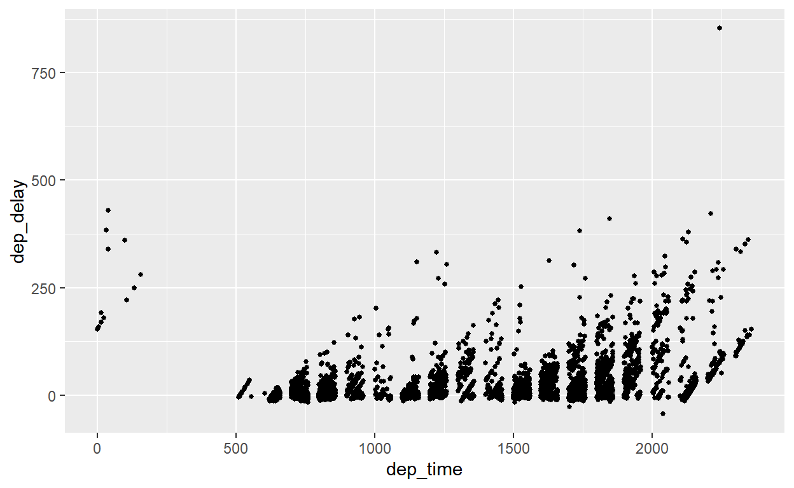
Parabéns, já produziu o seu primeiro gráfico! O que você acha? Não é o mais bonito, mas é impressionante para um código de três linhas curtas. Mas provavalmente o código acima permanece um mistério. Vamos desagregar os componentes:
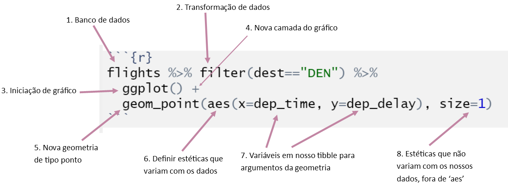
Começamos - como sempre - com o nosso banco de dados (tibble) relevante. Seguimos com qualquer transformação de dados desejada, aqui um filtro para o destino de Denver (‘DEN’). O último pipe passa o tibble resultante (apenas os voos para Denver) para o meio-ambiente de gráficos, o ggplot() (sem argumento). ggplot() é uma função que inicia um gráfico, mas na verdade não coloca nenhum conteúdo nele.
Agora, uma observação importante: os nossos gráficos compõem várias ‘camadas’ que podemos juntar em linhas separadas, e adicionamos as camadas com o símbolo ‘+’ em vez de um pipe (‘%>%’). É fácil esquecer a diferença, mas é importante: um pipe (‘%>%’) passa os dados para transformação e o ‘+’ adiciona mais informação, mais camadas.
Estéticas
Existem centenas de elementos do nosso gráfico que podemos personalizar. Em breve vamos ver como a customizar os títulos, eixos, o fundo, a leganda etc. Agora, vamos focar nos elementos visuais de cada camada (cada geometria) de dados. Há várias opções, e qual é disponível depende de qual geometria estamos usando, mas é bom resumir as opções mais comuns:
| Estética | Descrição |
|---|---|
| x | Posição em relação a eixo x |
| y | Posição em relação a eixo y |
| colour | Cor de ponto/linha/contorno de polígono |
| fill | Cor de dentro de área/barra |
| alpha | Transparência |
| shape | Forma da observação |
| size | Tamanho da observação |
| linetype | Se a linha estiver preenchida, pontilhada ou tracejada |
| label | Texto |
Estéticas podem ser ligadas com as variáveis do nosso banco de dados. Por exemplo, se quisemos mostrar um ponto para cada voo, pode ser que o x reflete a hora de partida (a variável dep_time), o y reflete o atraso (dep_delay), o shape reflete o aeroporto de partido (origin), o size reflete a distância de viagem (distance), e o colour reflete a companhia aérea (carrier).
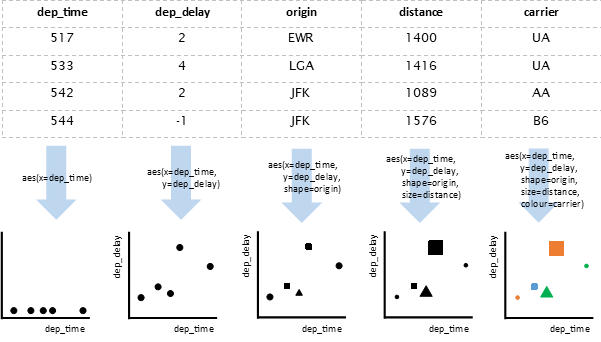
Há duas opções para especificar as estéticas de uma camada, dependendo se quiremos que as estéticas variem conforme com os nossos dados, ou sejam fixas e constantes para todas as observações.
- Para estéticas que variam com os nossos dados (ex. o cor depende da companhia aérea), definimos a estética com uma variável, e dentro da função
aes().
... geom_point(aes(x=dep_time, y=dep_delay, shape=origin, size=distance, colour=carrier))- Para estéticas que não variam com os nossos dados (ex. o tamanho é fixo), definimos a estética com um valor único (uma constante) em vez de uma variável, e fora da função
aes().
... geom_point(size=10, alpha=0.7)Geometrias
A parte mais difícil de preparar um gráfico é escolher a geometria apropriada. Claro que isto tem a ver com o estilo de gráfico que queremos, mas também depende do número e os tipos de variáveis que queremos apresentar. Todas as geometrias começam com geom_, e as opções mais comuns são as seguintes (lembrando que existem possibilidades infinitas):
| Geom | Variáveis para Visualizar | Estéticas comuns | Exemplo |
|---|---|---|---|
| geom_bar | Uma variável discreta (o número de observações por grupo) | x | 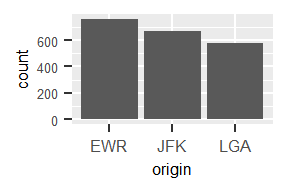 |
| geom_histogram | Uma variável contínua | x | 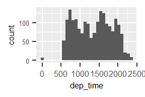 |
| geom_density | Uma variável contínua | x | 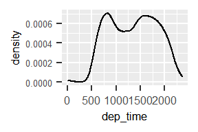 |
| geom_point | Duas variáveis contínuas | x, y | 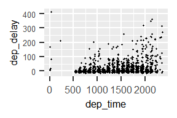 |
| geom_histogram | Uma variável contínua, e uma discreta | x, fill | 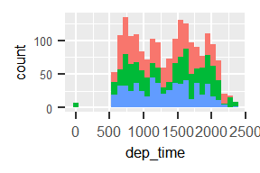 |
| geom_density | Uma variável contínua, e uma discreta | x, colour | 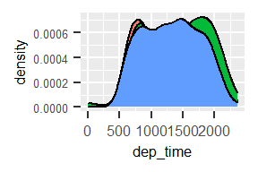 |
| geom_boxplot | Uma variável contínua, e uma discreta | x, y | 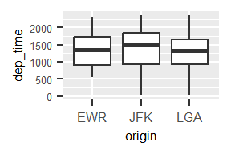 |
| geom_col | Uma variável contínua, e uma discreta | x, y | 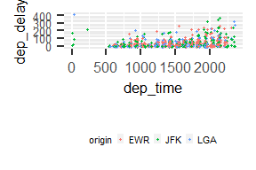 |
| geom_line | Uma variável contínua, e uma discreta ordenada | x, y, group | 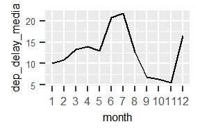 |
| geom_point | Duas variáveis contínuas e uma discreta | x, y, colour/shape/size |

|
Geometria para uma variável discreta (o número de observações por grupo)
Vamos começar com o gráfico mais simples: Os nossos dados são divididos em grupos por uma variável discreta e queremos conhecer o número de observações (linhas) em cada grupo. Veja como apresentar essa informação em ggplot para o banco de dados de flights por origin:
flights %>% ggplot() +
geom_bar(aes(x=origin))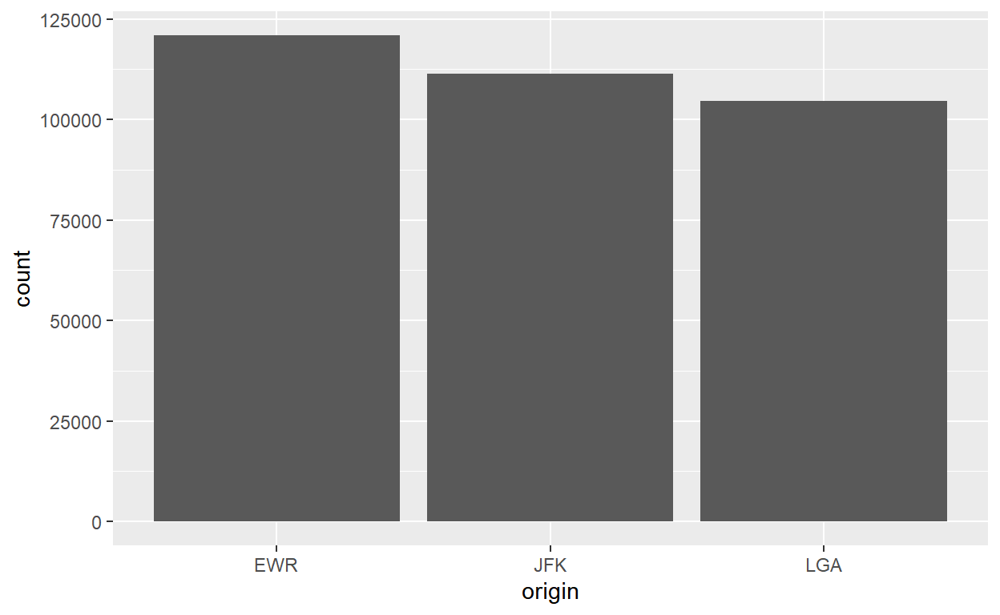
Vamos olhar cada uma de suas partes.
Comecemos pela primeira linha. A principal função do código é, como era de se esperar, o nosso tibble, seguido por ggplot(). Note que não estamos fazendo uma atribuição, por enquanto, pois queremos apenas “imprimir” o gráfico, e não guardá-lo como objeto (algo perfeitamente possível!). ggplot() é uma função que inicia um gráfico, mas na verdade não coloca nenhum conteúdo nele.
Agora, para adicionar uma geometria, colocamos um símbolo de “+” após fechar o parêntesis da função ggplot e, convencionalmente na linha seguinte, utilizarmos a função da geometria correspondente. Cada “+” nos permite adicionar mais uma camada em nosso gráfico. Mas qual camada? Nós definimos uma camada principalmente por sua geometria - o tipo de representação visual dos nossos dados que queremos. geom_bar indica que queremos uma geometria de barras, como um ‘bar chart’ em excel.
A escolha da geometria depende do tipo de dados que você deseja visualizar de seu tibble. Aqui, analisamos os dados por origem, que é uma variável discreta com três valores (character ou factor), então usamos uma geometria que corresponda com dados discretos. Quando não queremos cruzar esta variável discreta com nenhuma outra variável, a única coisa que pode ser feito é contar e comparar o número de observações (voos) em cada grupo (origem).
A lógica de um gráfico de barras é representar a contagem de frequência de cada categoria discreta, então faz sentido usar a geometria geom_bar. Vamos ver exemplos de outras geometrias que corespondam a outros dados abaixo.
Na linha de código da geometria, as 3 letrinhas “aes” causam estranheza. “aes” é a abreviação de “aesthetics”. Aqui definiremos quais variáveis de nosso tibble farão parte do gráfico. Estamos trabalhando por enquanto com apenas uma variável, e cada grupo será representada separadamente ao longo do eixo horizontal, ou eixo “x”. Por esta razão preenchemos o parâmetro “x” da “aesthetics” e nada mais.
Habilidade Básica de Programação: Apresentando Gráficos no relatório final
Antes de mais nada, vamos ver como a encaminhar os nossos gráficos para o relatório final (HTML, DOC ou PDF). Isto é a parte fácil. Deixamos o nosso gráfico em um chunk (sem salvar como objeto) e ele será inserido no relatório final na mesma localização, antes e depois qualquer texto simples.
```{r}
flights %>% ggplot() +
geom_bar(aes(x=origin))
```Se preferir, pode salvar o seu gráfico como objeto, e depois digitar o nome do objeto em um chunk sozinho para gerar o mesmo efeito.
```{r}
grafico <- flights %>% ggplot() +
geom_bar(aes(x=origin))
```
```{r}
grafico
```Existem algumas opções de chunk que podemos usar para controlar a apresentação dos gráficos. Os mais importantes são fig.height e fig.width que nos permitem especificar o tamanho do gráfico final, em unidades de inches.
```{r, fig.height=2, fig.width=2}
flights %>% ggplot() +
geom_bar(aes(x=origin))
```Gráficos com uma variável contínua - Gráficos de histogramas
Vamos trocar rapidamente para gráficos de uma variável contínua, velocidade, alterando o valor de “x” dentro de aes(). (Não temos variáveis verdadeiramente contínuas no banco de flights - mesmo os horários são discretas por minuto, então vamos calcular velocidade no fluxo de processamento).
flights <- flights %>%
mutate(velocidade=distance/air_time)
flights %>%
ggplot() +
geom_bar(aes(x=velocidade))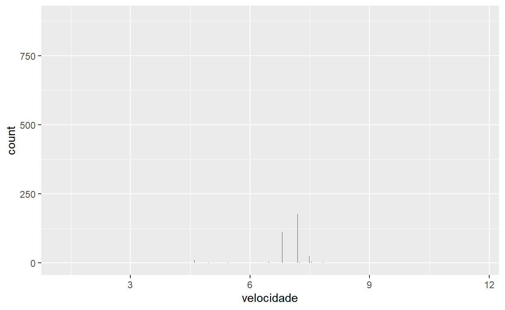
Este gráfico está quase em branco, por quê? Tentamos representar uma variável contínua (velocidade) com uma geometria construído para variáveis discretas (geom_bar). Como cada valor de velocidade é quase único, existe uma barra (minúscula) para cada indivíduo e o gráfico não faz sentido. Precisamos mudar o geometria: o equivalente de um gráfico de barras para variáveis únicas contínuas é uma histograma, então usamos geom_histogram.
flights %>%
ggplot() +
geom_histogram(aes(x=velocidade))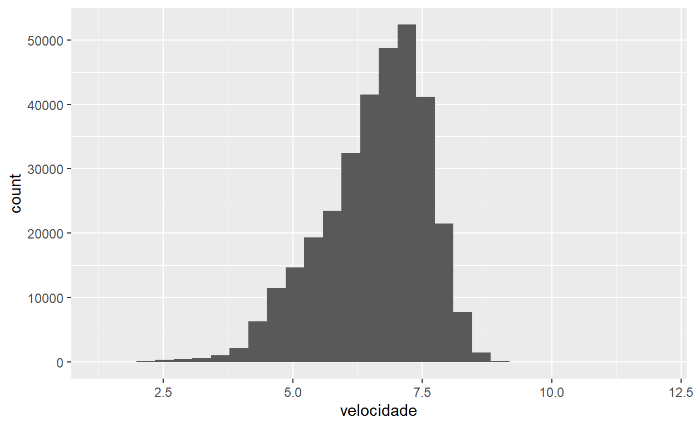
Faz mais sentido? Espero que sim. Compare os dois códigos dos gráficos acima com calma e compreenda as diferenças. Note que é o tipo de variável que demanda a geometria a ser escolhida, e não o contrário.
Parâmetros fixos
As geometrias, cada uma com sua utilidade, também têm parâmetros que podem ser alterados. Por exemplo, as barras do histograma que acabamos de produzir tem uma largura fixa. Vamos aumentar sua largura - o binwidth - ou seja, vamos representar mais valores do eixo “x” em cada barra do histograma:
flights %>%
ggplot() +
geom_histogram(aes(x=velocidade), binwidth=1)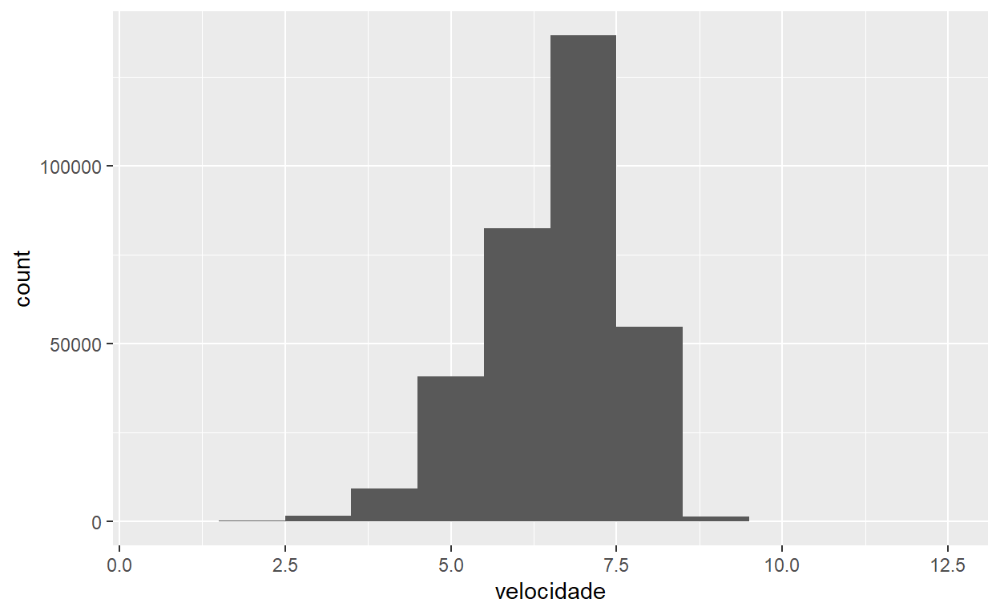
Uma observação importante aqui: o binwidth é especificado fora do aes(). Por que? Porque existe uma regra importante no ggplot: parâmetros que variem dependendo de nossos dados devem ficar dentro de aes(); parâmetros fixos que não dependam de nossos dados devem ficar fora do aes(). Então, em nosso código, temos dentro de aes() uma variável, velocidade, e fora de aes() um número fixo independente dos dados, 1.
O gráfico está muito cinza. Se quisemos mudar algumas cores, onde vamos especificar novos parâmetros de cores? Enquanto as cores são fixas para todo o gráfico e não dependem de nossos dados, inserimos o parãmetro fora de aes(). O parâmetro de fill especifica o preenchimento da barra, e o colour a borda. Pode usar nomes de cores simples em inglês (vamos ver outras opções em breve).
flights %>%
ggplot() +
geom_histogram(aes(x=velocidade), binwidth=1, colour="black", fill="orange")
Melhor, não? Em geral, os argumentos “colour” e “fill” servem a várias geometrias.
Curiosidade: R aceita as duas grafias em inglês para a palavra cor, “colour” (britânico, e obviamente o mais correto e bonito!) e “color” (americano).
Gráficos com uma variável contínua - Gráficos de densidade
Uma alternativa mais elegante ao histograma são os gráficos de densidade. Vamos, assim, apenas alterar a geometria para a mesma variável, velocidade, e observar novamente sua distribuição. A lição é que, embora a geometria deva corresponder ao tipo de dados, existem várias geometrias que podem funcionar para um tipo de dado específico (histograma ou densidade, por exemplo).
flights %>%
ggplot() +
geom_density(aes(x=velocidade))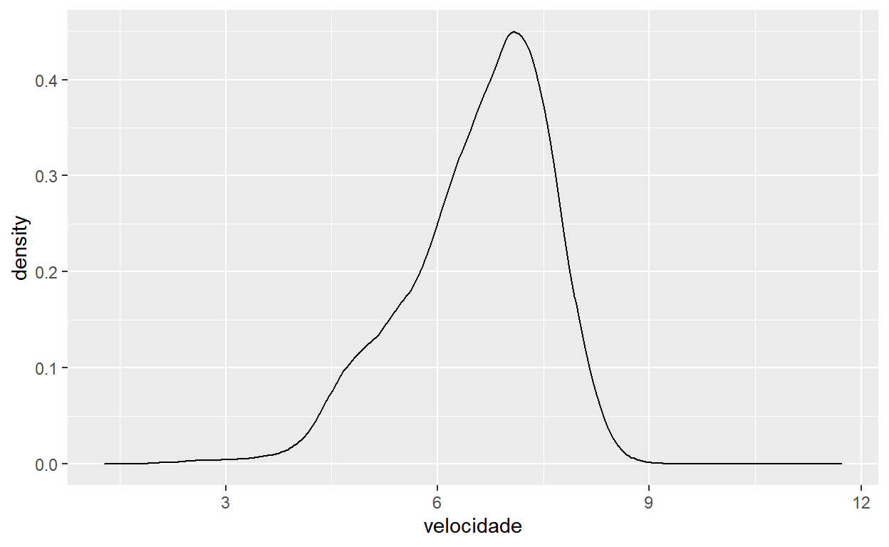
Lindo, mas ainda cinza demais. Vamos adicionar cor à borda:
flights %>%
ggplot() +
geom_density(aes(x=velocidade), colour="blue")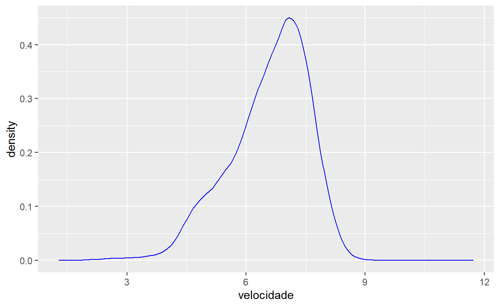
Melhor (melhor?), mas ainda muito branco. Vamos adicionar cor ao interior da curva:
flights %>%
ggplot() +
geom_density(aes(x=velocidade), colour="blue", fill="blue")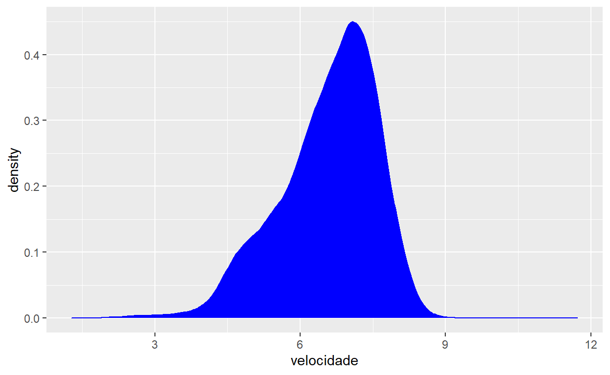
Muito pior. E se deixássemos a curva mais “transparente”?
flights %>%
ggplot() +
geom_density(aes(x=velocidade), colour="blue", fill="blue", alpha=0.2)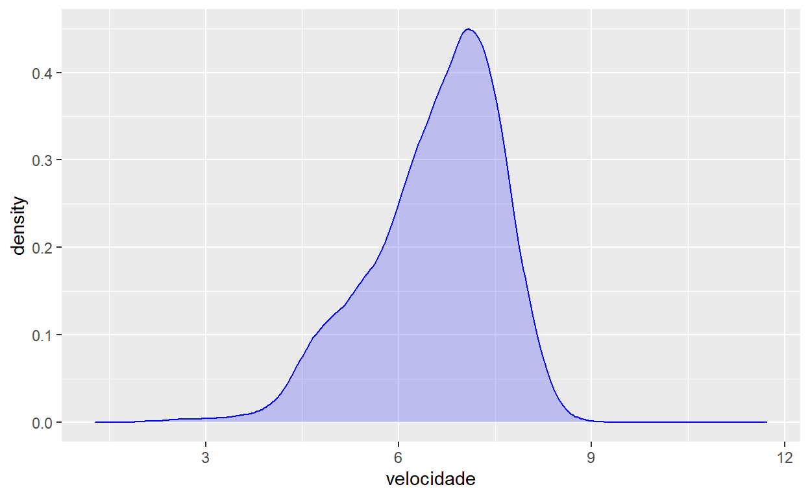
Agora sim melhorou. Mas nos falta uma referência para facilitar a leitura do gráfico. Por exemplo, seria legal adicionar uma linha vertical que indicasse onde está a média da distribuição. Vamos calcular a média da renda usando as nossas habilidades do tutorial de resumos estatísticos, e com a ajuda de pull para transformar o resultado de um tibble para um valor único:
media_velocidade <- flights %>% summarize(media_velocidade=mean(velocidade,na.rm=T)) %>%
pull(media_velocidade)Mas estamos tratando de curvas de densidade, não estamos? Nessa geometria não há possibilidade de representar valores com uma linha vertical. Vamos, então, adicionar uma nova geometria, com uma estética própria, xintercept que aceita a localização de uma linha vertical, e com novos dados (no caso, um valor único), ao gráfico que já havíamos construído:
flights %>%
ggplot() +
geom_density(aes(x=velocidade), colour="blue", fill="blue", alpha=0.2) +
geom_vline(aes(xintercept = media_velocidade))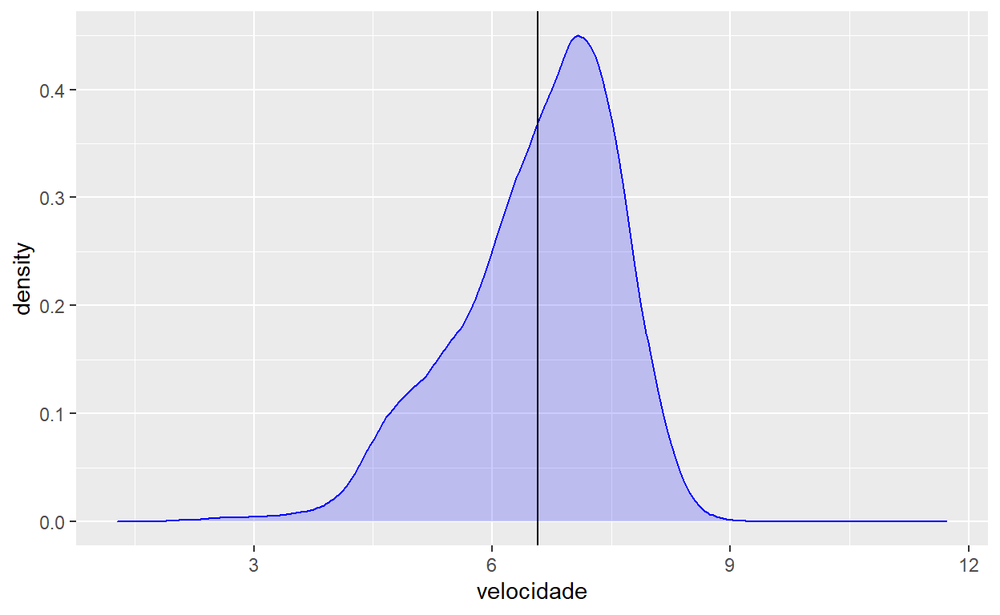
Veja que, com ggplot, podemos adicionar novas geometrias e dados sempre que precisarmos. Agora, temos duas camadas e duas geometrias.
Para tornar o gráfico mais interessante, vamos alterar a forma e a cor da linha adicionada no gráfico anterior:
flights %>%
ggplot() +
geom_density(aes(x=velocidade), colour="blue", fill="blue", alpha=0.2) +
geom_vline(aes(xintercept = media_velocidade), linetype="dashed", colour="red")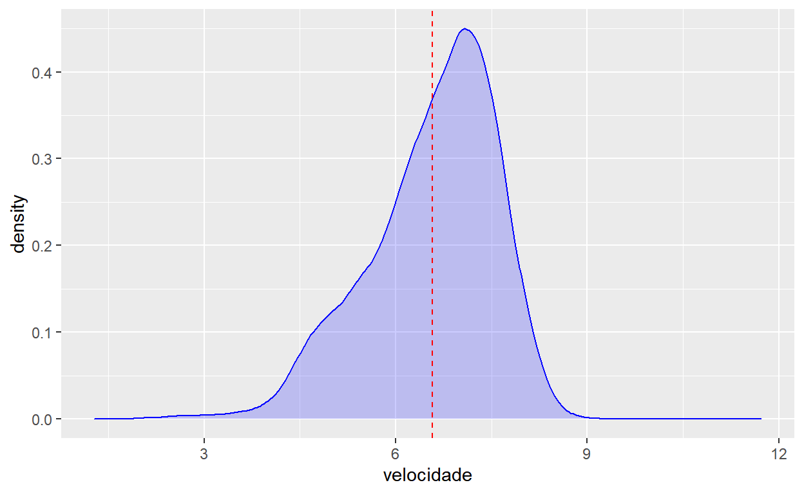
Exercício 1: Gráficos de uma Variável
- Prepare um gráfico de barras mostrando o número de voos por mês.
flights %>%
ggplot() +
geom_bar(aes(x=month))- Prepare um gráfico de barras mostrando o número de voos por companhia aérea (
carrier) para o aeroporto de origem JFK.
flights %>% filter(origin=="JFK") %>%
ggplot() +
geom_bar(aes(x=carrier))- Prepare uma histograma mostrando a distribuição de número de voos por hora de partida (
dep_time) para voos entre EWR e SFO (San Francisco).
flights %>% filter(origin=="EWR" & dest=="SFO") %>%
ggplot() +
geom_histogram(aes(x=dep_time))- Prepare um gráfico de densidade mostrando a distribuição de duração (
air_time) para voos entre JFK e LAX (Los Angeles).
flights %>% filter(origin=="JFK" & dest=="LAX") %>%
ggplot() +
geom_density(aes(x=air_time))Gráficos com uma variável contínua e uma variável discreta
Vamos dar alguns passos para traz e retornar aos histogramas. E se quisermos comparar as distribuições de dep_time por origem, por exemplo? Precisamos filtrar os dados e fazer um gráfico para cada aeroporto?
Poderíamos. Mas mais interessante é comparar as distribuições em um mesmo gráfico. Para fazer isso, precisamos saber como visualizar duas variáveis do nosso tibble ao mesmo tempo. Como estamos separando uma distribuição de uma variável contínua (dep_time) em três, a partir de uma segunda variável discreta (origin), precisamos adicionar essa nova variável à “aesthetics” (aes). Veja como:
flights %>%
ggplot() +
geom_histogram(aes(x=dep_time, fill=origin))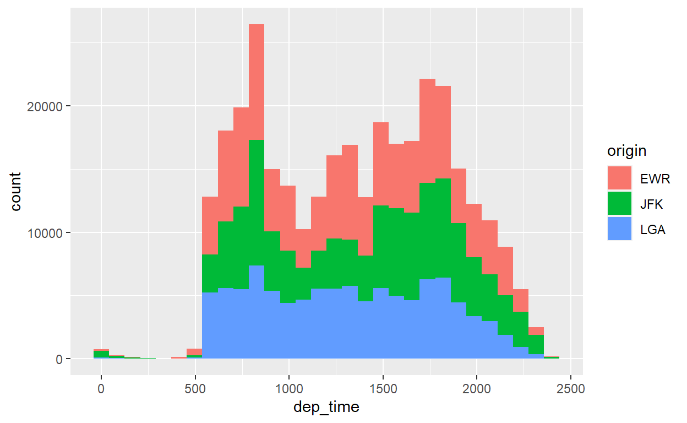
Observe que adicionamos o parâmetro “fill” à “aesthetics” (dentro do aes() porque ele depende de nossos dados). Isso significa que a variável origin separará as distribuições de velocidade em cores de preenchimento diferentes. Conseguem ver as três distribuições, uma acima da outra? Note que agora temos uma legenda.
A sobreposição das duas histogramas dificulta a visualização de todos os dados. Podemos ajustar como os dois conjuntos de dados são exibidos um em cima do outro com o argumento ‘position’. Por exemplo, com position=“dodge” podemos organizar os dados lado a lado:
flights %>%
ggplot() +
geom_histogram(aes(x=dep_time, fill=origin),
position = "dodge", binwidth=200)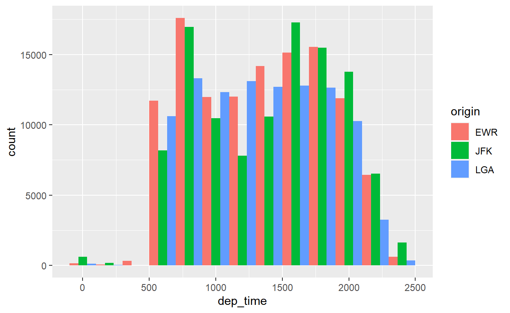
Melhor? Não sei, depende das suas preferências.
Vamos tentar algo semelhante com as curvas de densidade. Em vez de “fill”, vamos usar a variável origin em colour em aes e separar as distribuições por cores de borda:
flights %>%
ggplot() +
geom_density(aes(x=dep_time, colour=origin))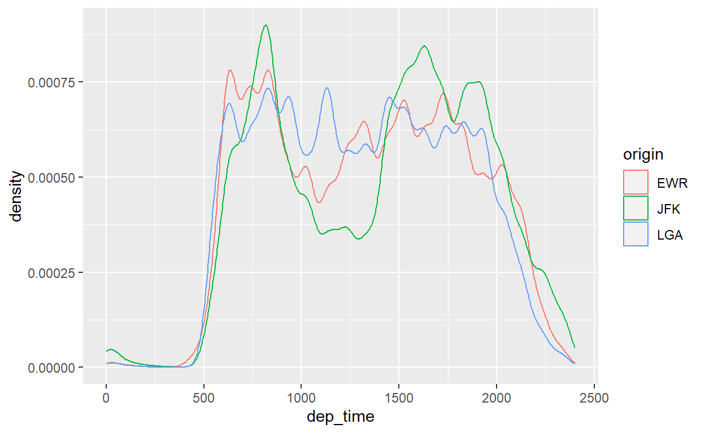
Agora sim está melhor. Vamos adicionar o mesmo com “fill”:
flights %>%
ggplot() +
geom_density(aes(x=dep_time, fill=origin))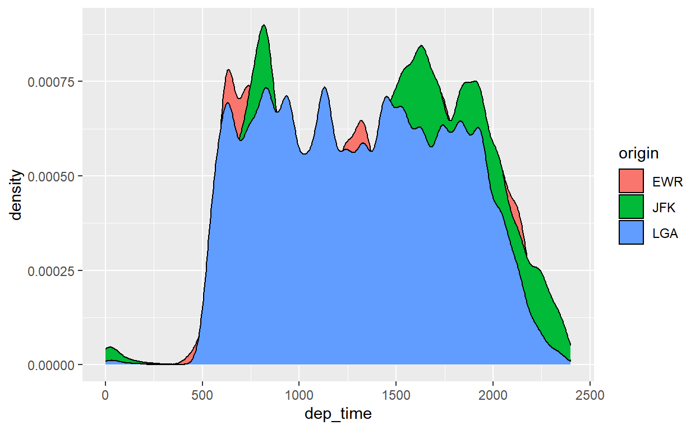
Não ficou muito bom. Mas pode melhorar. Com o parâmetro “alpha”, podemos deixar as distribuições mais “transparentes” e observar as áreas nas quais se sobrepôe:
flights %>%
ggplot() +
geom_density(aes(x=dep_time, fill=origin), alpha=0.5)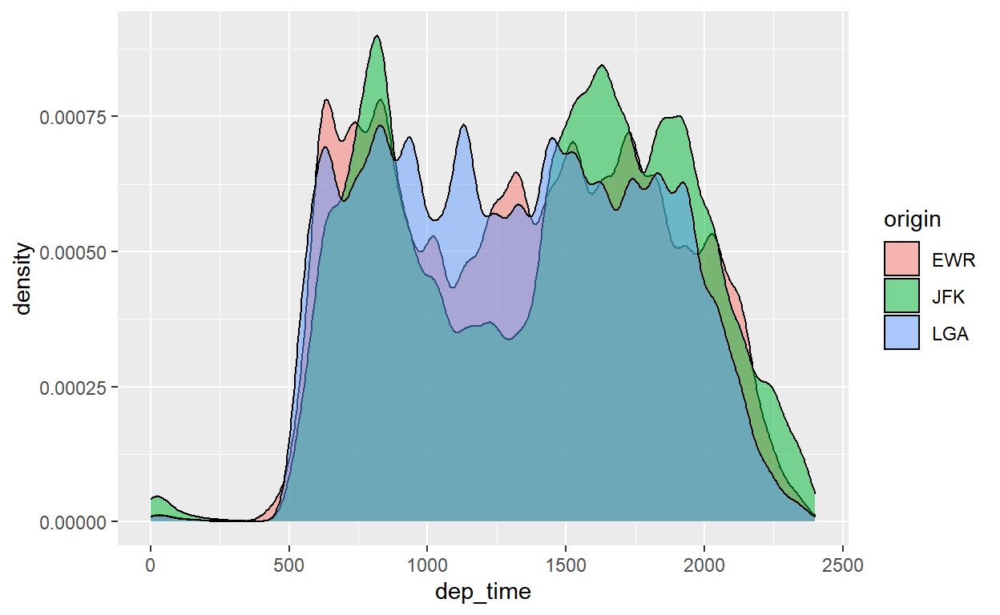
Finalmente, podemos usar “fill” e “colour” juntos na “aesthetics”
flights %>%
ggplot() +
geom_density(aes(x=dep_time, colour=origin, fill=origin), alpha=0.5)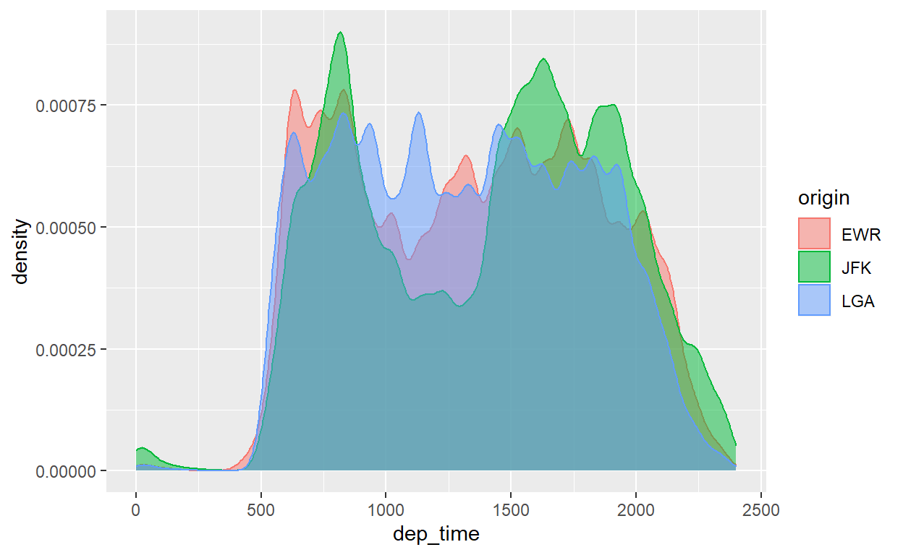
Que belezura de gráfico! A comparação de distribuições de uma variável contínua por uma variável discreta é uma das mais úteis em ciência, pois é exatamente a forma gráfica de testes de hipóteses clássico quando temos dois grupos.
Gráficos com uma variável contínua e uma variável discreta - Gráficos de boxplot
Vamos repetir o gráfico acima, mas, em vez de descrever a distribuição da variável contíuna ao longo de eixo x em termos da sua densidade, vamos descrever ela ao longo do eixo y com um boxplot que resume as estatísticas importantes da distribuição. O boxplot mostra a mediana no meio da caixa, o primeiro e terceiro quantil nos limites da caixa, e \(1.5*IQR\) (IQR é a diferença entre o terceiro e primeiro quantil) além da caixa com as linhas (whiskers).
flights %>%
ggplot() +
geom_boxplot(aes(x=origin, y=dep_time))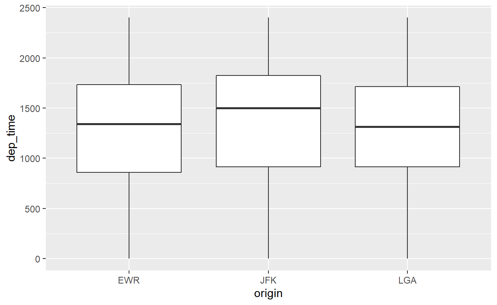
Gráficos com um valor único por uma variável discreta - Gráficos de coluna
Os gráficos de histograma, densidade e boxplot geram gráficos baseado na distribuição de múltiplas observações por categoria discreta. Quando temos apenas um valor único por categoria discreta, usamos um gráfico de coluna. Normalmente isso exige o uso de group_by e summarize para mudar o tamanho de nosso banco de dados e a unidade de análise para ter uma linha por grupo.
Sempre temos que pensar no tibble que estamos encaminhando para o ggplot. O tibble de flights é uma tabela de todos os voos e não será apropriado para mostrar um valor por aeroporto - temas milhares de observações por aeroporto! Então a preparação de dados tem que produzir um tibble apropriado antes da visualização:
flights %>% group_by(origin) %>%
summarize(dep_delay_media=mean(dep_delay,na.rm=T))
flights %>% group_by(origin) %>%
summarize(dep_delay_media=mean(dep_delay,na.rm=T)) %>%
ggplot() +
geom_col(aes(x=origin, y=dep_delay_media))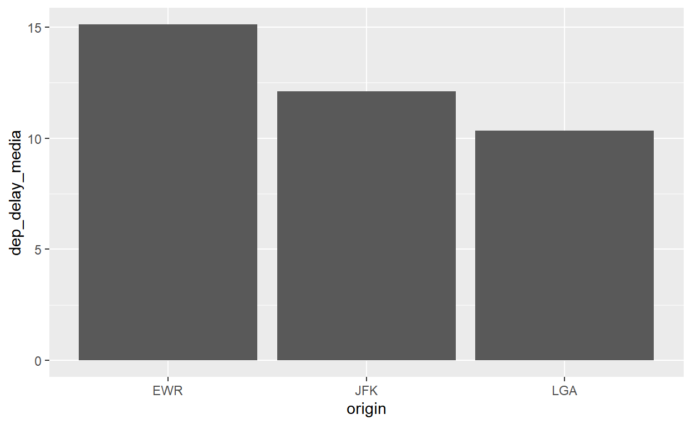
Gráficos de histogramas, densidade, coluna e boxplot são os melhores gráficos para explorarmos a distribuição de variáveis quando queremos conhecer os dados que recém coletamos ou obtemos.
Gráficos de duas variáveis contínuas
Até agora trabalhamos com distribuições de uma única variável ou com a distribuição conjunta de uma variável contínua por outra discreta (em outras palavras, separando a distribuição de uma variável em várias a partir de um variável categórica).
Vamos ver agora como relacionar graficamente duas variáveis contínuas. O padrão é usarmos a geometria de gráfico de dispersão, que presenta cada par de informações como uma coordenada no espaço bidimensional. Vamos ver um exemplo com distance (eixo horizontal) e air_time (eixo vertical) usando a geometria geom_point:
(Note: Caso o seu computador é lento, pode pegar uma amostra aleatória de ex. 1000 linhas do banco de dados flights com sample_n(1000) antes de rodar os gráficos abaixo.)
flights %>% sample_n(1000) %>%
ggplot() +
geom_point(aes(x = distance, y = air_time))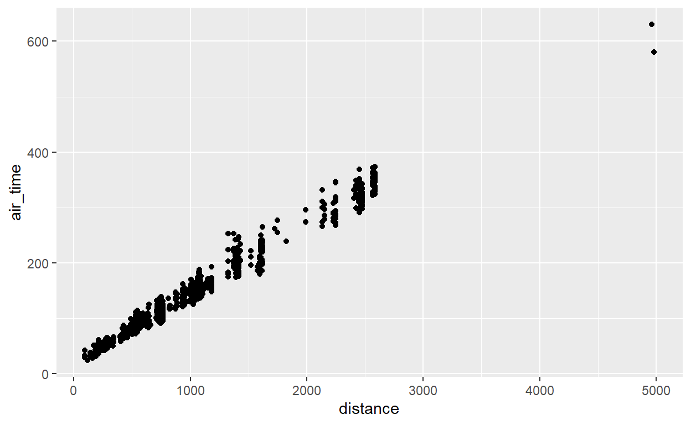
Você consegue ler este gráfico? Cada ponto representa um voo, ou seja, posiciona no espaço o par (distance, air_time) daquele voo. Naturalmente, há uma certa tendência nos dados: os voos mais distantes duram mais tempo.
Para personalizar o gráfico, podemos ajustar o cor dos pontos, o tamanho deles, e a forma deles:
flights %>% sample_n(1000) %>%
ggplot() +
geom_point(aes(x = distance, y = air_time), size=0.1, color="blue", shape=2)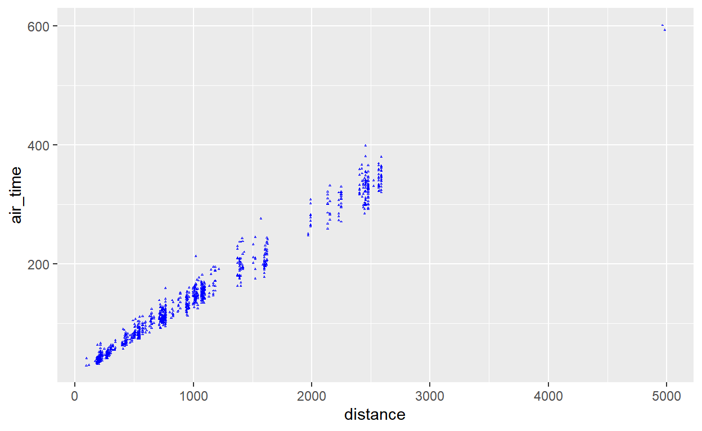
Sempre temos que experimentar várias vezes para achar uma formatação apropriada. A forma (shape) é um número que corresponde aos códigos oficiais - pode ver a lista deles na segunda página do cheatsheet do ggplot2, por exemplo.
Uma geometria suplementar com duas variáveis contínuas é resumir a relação entre as duas variáveis com modelos lineares e não lineares. A geometria geom_smooth cumpre esse papel.
Para utilizá-la, precisamos definir qual é o método (parâmetro “method”) de modelar aos dados. O mais convencional é representar a relação entre as variáveis como reta: um ‘linear model’ que é representado por ‘lm’. Veja o exemplo (ignore o parâmetro “se” por enquanto):
flights %>% sample_n(1000) %>%
ggplot() +
geom_point(aes(x = distance, y =air_time), size=0.1) +
geom_smooth(aes(x = distance, y = air_time), method = "lm", se = FALSE)
Legal, não? Se retirarmos o parâmetro “se” (standard error), ou voltarmos seu valor para o padrão “TRUE”, obteremos também o intervalo de confiança (95%) da reta que inserimos. (Diminuimos o n aqui para tornar o intervalo de confiança em cinza mais visível).
flights %>% sample_n(50) %>%
ggplot() +
geom_point(aes(x = distance, y = air_time), size=0.1) +
geom_smooth(aes(x = distance, y = air_time), method = "lm")
A alternativa não linear para representar a relação ao dados mais utilizada com essa geometria é o método “loess” (local weighted regression). Veja o resultado:
flights %>% sample_n(1000) %>% ggplot() +
geom_point(aes(x = distance, y = air_time), size=0.1) +
geom_smooth(aes(x = distance, y = air_time), method = "loess")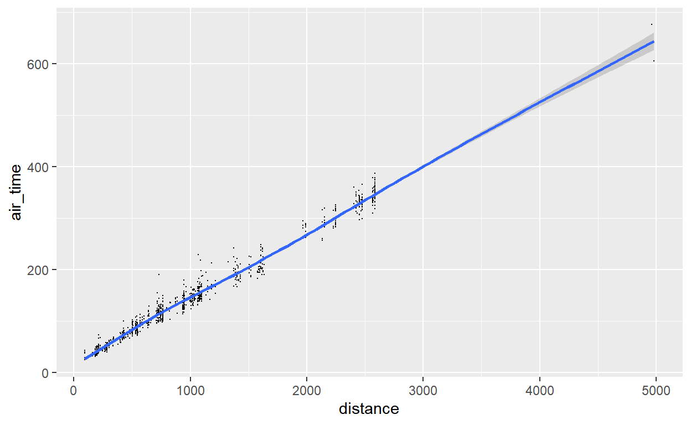
Exercício 2: Gráficos de duas Variáveis
- Prepare um gráfico de densidade mostrando a distribuição de hora de partida de voos entre EWR e BOS (Boston) por companhia aérea (
carrier).
flights %>% filter(origin=="EWR" & dest=="BOS") %>%
ggplot() +
geom_density(aes(x=dep_time, group=carrier, colour=carrier))- Prepare um gráfico de colunas/barras (
geom_col) mostrando a duração média (air_time) de voos de cada companhia aérea.
flights %>% group_by(carrier) %>%
summarize(duracao_media=mean(air_time, na.rm=T)) %>%
ggplot() +
geom_col(aes(x=carrier, y=duracao_media))- Prepare um gráfico de pontos mostrando a relação entre o atraso na partida (
dep_delay) e o atraso na chegada (arr_delay) para os voos de JFK a MIA (Miama).
flights %>% filter(origin=="JFK" & dest=="MIA") %>%
ggplot() +
geom_point(aes(x=dep_delay, y=arr_delay))- Prepare um gráfico de pontos mostrando a relação entre a duração (
air_time) média e o atraso média (dep_delay) de cada companhia aérea.
flights %>% group_by(carrier) %>%
summarize(dep_delay_media=mean(dep_delay, na.rm=T),
duracao_media=mean(air_time, na.rm=T)) %>%
ggplot() +
geom_point(aes(x=duracao_media, y=dep_delay_media))- Adicione uma linha de tendência/regressão linear no gráfico da questão 4.
flights %>% group_by(carrier) %>%
summarize(dep_delay_media=mean(dep_delay, na.rm=T),
duracao_media=mean(air_time, na.rm=T)) %>%
ggplot() +
geom_point(aes(x=duracao_media, y=dep_delay_media)) +
geom_smooth(aes(x=duracao_media, y=dep_delay_media), method="lm")Gráficos de três ou mais variáveis
Em geral, estamos limitados por papel e telas bidimensionais para exibir apenas geometrias de duas variáveis. Mas existe um truque que podemos usar para mostrar mais informações: incluir os outros parâmetros de uma geometria, tais como cores, tamanhos e formas, dentro de aes segundo uma terceira variável em seu tibble.
Se, por exemplo, queremos representar uma terceira variável numérica, podemos colocá-la como o tamanho dos pontos (raio do círculo). Por exemplo, num gráfico comparando o dep_time e dep_delay dos voos, podemos definir o tamabho dos pontos proporcionalmente à distância de cada voo:
flights %>% sample_n(1000) %>% ggplot() +
geom_point(aes(x = dep_time, y = dep_delay, size=distance))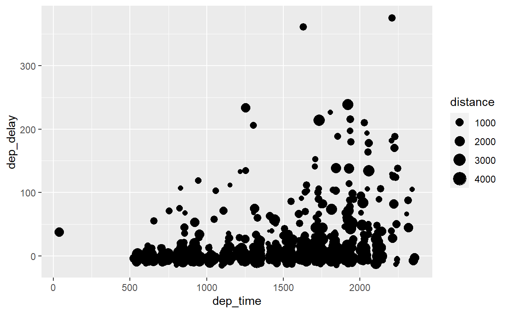
Se, em vez de alterar o tamanho dos pontos por uma variável numérica, quisermos alterar sua cor ou forma dos pontos com base em uma variável categória (aeroporto de origem, por exemplo), fazemos, respectivamente:
flights %>% sample_n(1000) %>% ggplot() +
geom_point(aes(x = dep_time, y = dep_delay, colour=origin))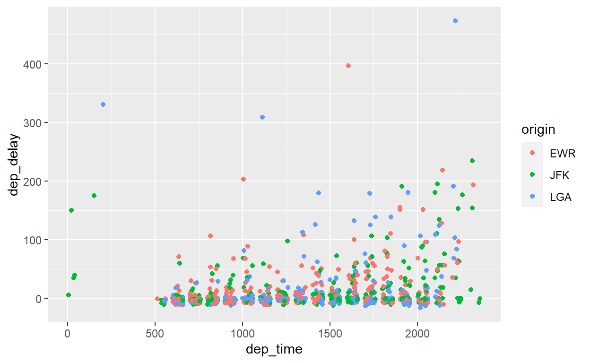
Ou:
flights %>% sample_n(1000) %>% ggplot() +
geom_point(aes(x = dep_time, y = dep_delay, shape=origin))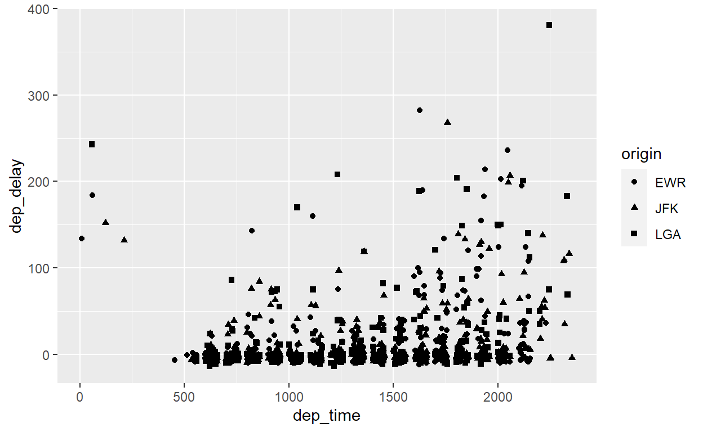
Múltiplos Gráficos (facet_grid)
Existe mais um outro jeito de mostrar mais de duas variáveis - podemos criar vários gráficos organizados em uma grade sem ter que repetir nosso código toda vez. Como fazer isso? Adicionando um ‘facet’ no final do nosso fluxo de preparação do gráfico. O mais util é facet_grid(), que adicionamos como qualquer outra camada. Dentro de facet_grid() podemos definir a variável discreta com que queremos separar os nossos dados e mostra em gráficos distintos. Especificamente, se quissemos que a divisão seja horizontal, usamos facet_grid(rows=vars(variável)), e se quissemos que a divisão seja vertical, usamos facet_grid(cols=vars(variável)). (O vars() aqui permite que separamos os gráficos por mais que uma variável).
Veja um exemplo:
flights %>% sample_n(1000) %>%
ggplot() +
geom_point(aes(x = dep_time, y = dep_delay)) +
facet_grid(cols=vars(origin))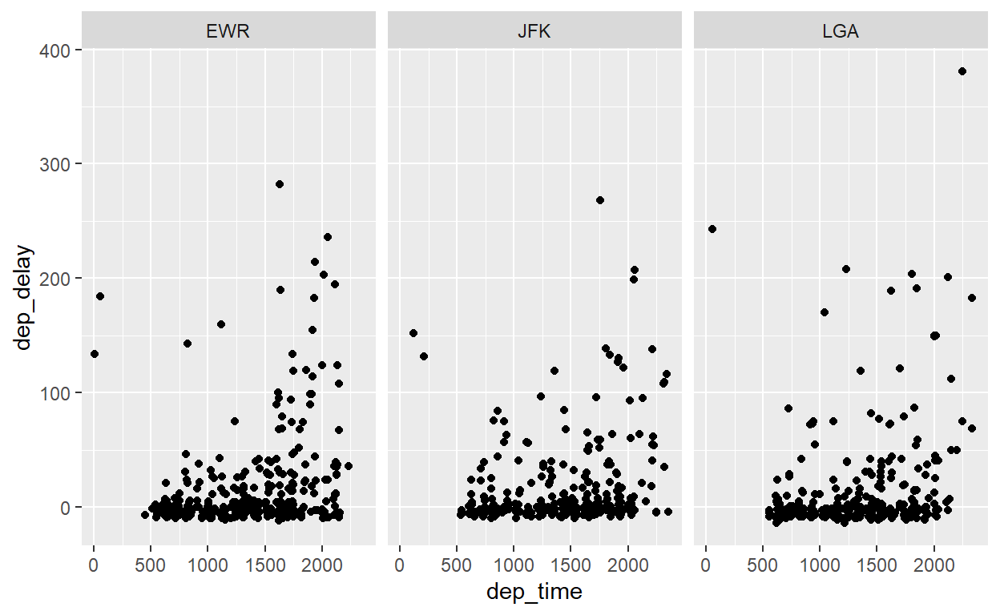
Ou, organizado verticalmente:
flights %>% sample_n(1000) %>%
ggplot() +
geom_point(aes(x = dep_time, y = dep_delay)) +
facet_grid(rows=vars(origin))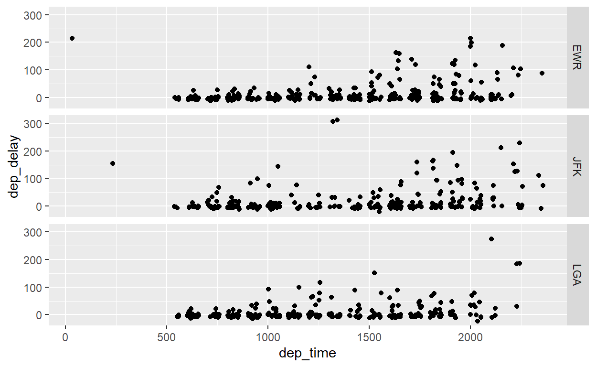
Para separar gráficos em uma grade, com uma variável horizontalmente e outra verticalmente, é só especificar ambos rows e cols.
flights %>% sample_n(1000) %>%
ggplot() +
geom_point(aes(x = dep_time, y = dep_delay)) +
facet_grid(rows=vars(month), cols=vars(origin))
O que mostra este gráfico? Cada elemento é um aeroporto de origem em um mês, e mostra a relação entre horário de partida e atraso neste mês e aeroporto.
Gráficos de Linha
Gráficos de linha exigem, em geral, um pouco mais de preparação de nossos dados. A variável x pode ser discreta ou contínua, mas precisa ser ordenada para que as linhas façam sentido. Precisamos organizar o tibble fora do ggplot e colocá-lo antes no pipe.
Para criar um gráfico de linha vamos usar month como nossa variável ordenada e, portanto, precisamos resumir os dados por month. Vamos analisar o atraso média por mês. O primeiro passo é transformar a variável month em um factor ordenado. Em seguida, vamos calcular o atraso média por mês. E finalmente, encaminhar os dados ao gráfico de linha, geom_line. geom_line exige um x, um y, e um group, para definir como a juntar os pontos ao longo do tempo - neste exemplo temos apenas um grupo/uma linha então podemos deixar group=1.
Veja a tabela que queremos produzir antes de visualizar:
flights %>%
mutate(month=factor(month, levels=1:12, ordered=TRUE)) %>%
group_by(month) %>%
summarize(dep_delay_media=mean(dep_delay,na.rm=T))E agora que temos os nossos dados na estrutura apropriada, com a unidade de análise o mês e a variável de atraso média disponível, adicionamos o código de ggplot:
flights %>%
mutate(month=factor(month, levels=1:12, ordered=TRUE)) %>%
group_by(month) %>%
summarize(dep_delay_media=mean(dep_delay,na.rm=T)) %>%
ggplot() +
geom_line(aes(x=month, y=dep_delay_media), group=1)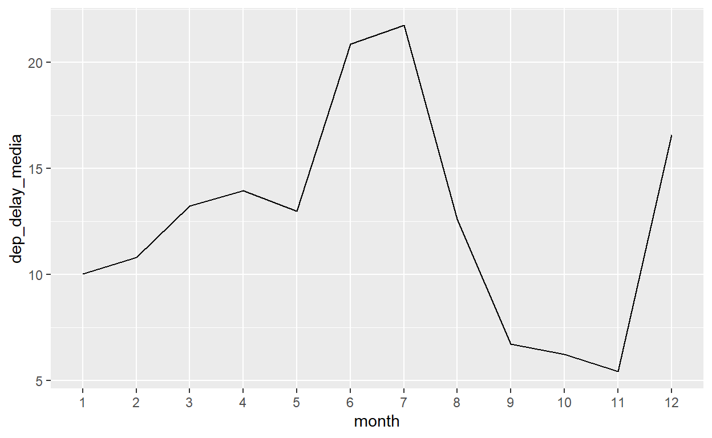
O que faremos se quisermos uma linha separada para cada aeroporto de origem? Como sempre, primeiramente temos que preparar os dados na forma apropriada, agrupando por origin também no resumo de dados, e depois definir group=origin dentro de geom_line (e dentro de aes).
flights %>%
mutate(month=factor(month, levels=1:12, ordered=TRUE)) %>%
group_by(month, origin) %>%
summarize(dep_delay_media=mean(dep_delay,na.rm=T)) %>%
ggplot() +
geom_line(aes(x=month, y=dep_delay_media, group=origin))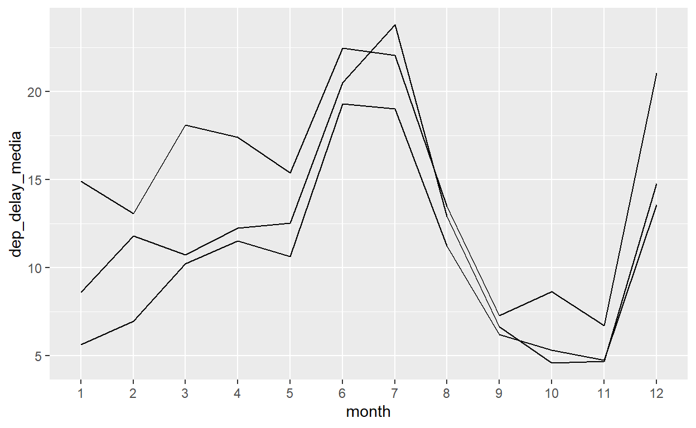
Não temos jeito de distinguir as linhas aqui então é necessário também definir o colour da linha:
flights %>%
mutate(month=factor(month, levels=1:12, ordered=TRUE)) %>%
group_by(month, origin) %>%
summarize(dep_delay_media=mean(dep_delay,na.rm=T)) %>%
ggplot() +
geom_line(aes(x=month, y=dep_delay_media, group=origin, colour=origin))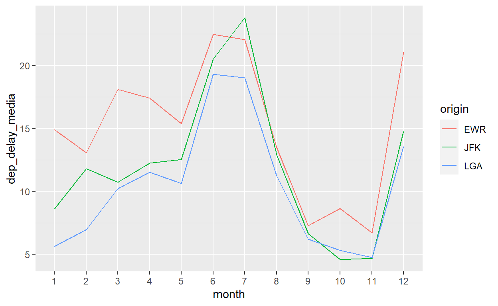
Perfeito!
Os gráficos de linha podem ser um pouco confusos no começo, então é legal ver como fica a estrutura da tabela que é criada antes do gráfico. Você imaginou como é a tabela do último gráfico?
flights %>%
mutate(month=factor(month, levels=1:12, ordered=TRUE)) %>%
group_by(month, origin) %>%
summarize(dep_delay_media=mean(dep_delay,na.rm=T))Gráfico de barras 100%
Podemos aproveitar o mesmo tipe de estrutura da tabela que criamos para o gráfico de linhas para criar gráficos de barras 100%. Esse tipo de gráfico é útil para entender a participação de cada grupo no total. Por exemplo, vamos calcular a contribuição de cada aeroporto ao atraso total em cada mês. Depois, é só trocar geom_line para geom_col e ajustar as estéticas apropriadas. Especificamente, geom_col permite o argumento position (que já usamos com geom_histogram acima) para comparar as barras relativamente, em porcentagens, quando position="fill":
flights %>%
mutate(month=factor(month, levels=1:12, ordered=TRUE)) %>%
group_by(month, origin) %>%
summarize(dep_delay_total=sum(dep_delay,na.rm=T)) %>%
ggplot() +
geom_col(aes(x=month, y=dep_delay_total, fill=origin), position = "fill")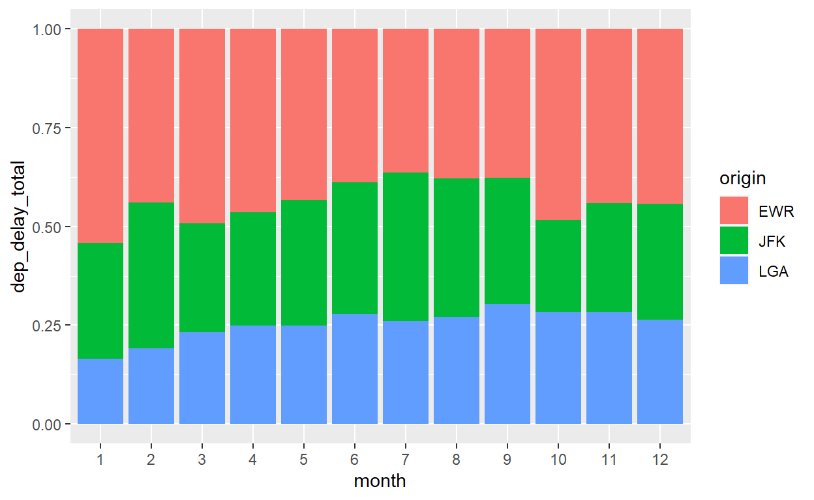
Mais geometrias
Existe uma variedade de geometrias que podemos usar como camadas para visualizar os nossos dados.
Uma geometria muito útil é geom_text, que coloca como formas geométricas os textos mesmos. Por exemplo, nós podemos especificar um gráfico de dispersão onde os pontos refletem o nome do destino do voo, usando o parâmetro ‘label’.
flights %>% sample_n(100) %>%
ggplot() +
geom_text(aes(x = dep_time, y = dep_delay, label=dest))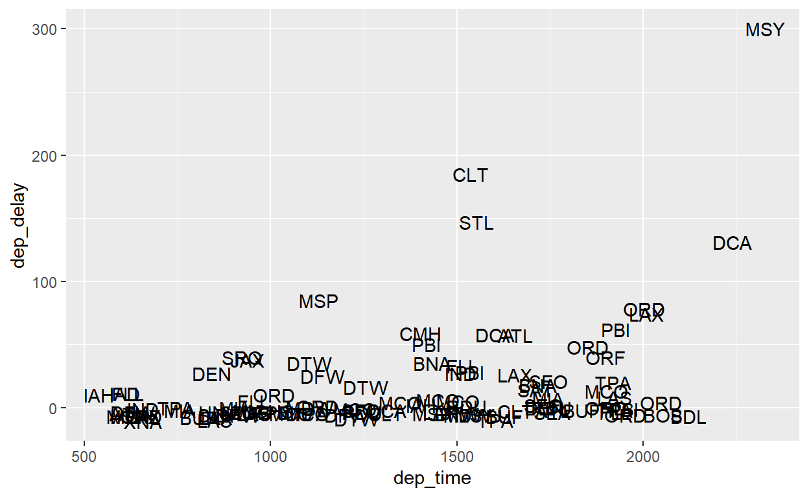
Outra geometria útil é geom_tile que tem uma forte conexão com mapas “raster” que discutiremos mais adiante no curso. Especificamos variáveis x e y, e também uma variável de ‘fill’ que se aplica a cada célula de interseção de x e y. Por exemplo, podemos avaliar o atraso média por aeroporto e mês.
flights %>% group_by(origin, month) %>%
summarize(dep_delay_media=mean(dep_delay,na.rm=T)) %>%
ggplot() +
geom_tile(aes(x = origin, y = month, fill=dep_delay_media))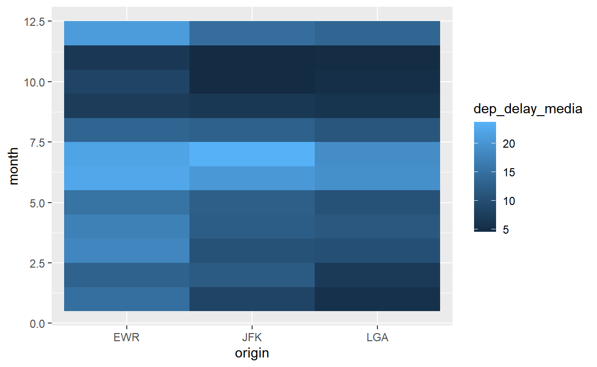
Evita voar de JFK em julho!
Finalmente, vamos ver como a gerar um gráfico de pizza. A primeira observação é que um gráfico de pizza contém os mesmos dados que um gráfico de barras relativo, de porcentagem. Então a primeira tarefa é gerar a tabela apropriada para este tipo de gráfico. Precismaos de um geom_col, com position="fill" para garantir que os valores somam a 100%, e vamos deixar a estética x em branco porque queremos apenas uma barra.
flights %>% group_by(origin) %>%
summarize(dep_delay_total=sum(dep_delay, na.rm=T)) %>%
ggplot() +
geom_col(aes(x="", y=dep_delay_total, fill=origin), position="fill")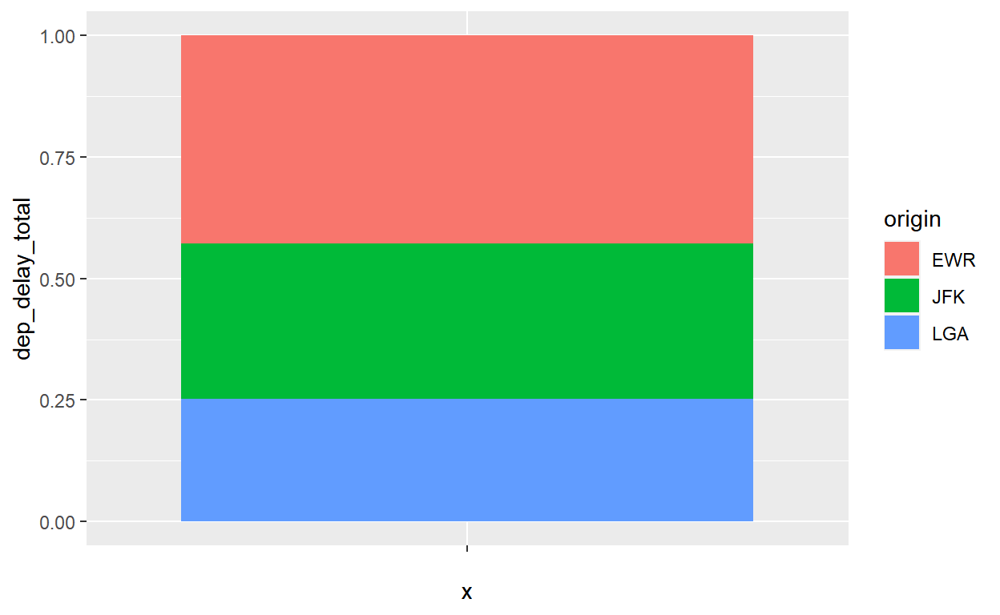
Veja o resultado. Com imaginação deve ser aparente que é um gráfico de pizza, mas organizado ‘verticalmente’. Para virar o nosso gráfico para um círculo, precisamos entender mais um elemento da gramática de gráficos: Além de geometrias e estéticas, existem sistemas de coordenados. Normalmente, eles são invisíveis e não precisamos especificar nada porque os coordenados são óbvios - uma grade definida horizontalmente por x e verticalmente por y, como usamos em todos os outros gráficos do tutorial atual. Mas existem outros sistemas de coordenados, por exemplo sistemas ‘polar’, que dividim a tela/papel em graus de um círuclo. Se definimos um sistema de coordenados polar com mais uma camada de coord_polar(), e varia o ángulo theta baseado na variável y (dep_delay), coord_polar(theta="y") geramos um gráfico de pizza:
flights %>% group_by(origin) %>%
summarize(dep_delay_total=sum(dep_delay, na.rm=T)) %>%
ggplot() +
geom_col(aes(x="", y=dep_delay_total, fill=origin), position="fill") +
coord_polar(theta="y")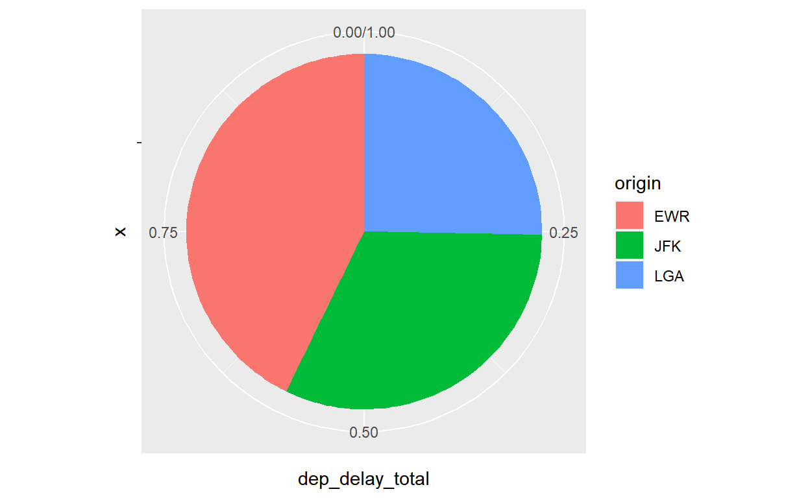
Mais uma linha e recebemos um gráfico completamente diferente visualmente, mas apresentado os mesmos dados.
Controlando cores com ‘scales’
Os partes mais envolventes dos gráficos são os cores. Mas também são os partes mais complexos. Temos que identificar exatamente qual parte do gráfico deve ser representado com qual cor, e especificar isso em termos sistemáticos. O mapeamento entre valores dos nossas variáveis e cores específicos é feito em ggplot por scales (escalas). Scales são definidos em mais uma camada do nosso gráfico.
Precisamos tomar muito cuidado com o tipo de scale, que precisa corresponder ao tipo da nossa variável e também se estamos colorindo um ponto/linha (‘colour’) ou preenchendo uma área (‘fill’). Use o tabela debaixo como uma guia:
| Tipo de variável | Color (ponto, linha) | Fill (área) |
|---|---|---|
| Contínuo | scale_color_gradient(low="cor1",high="cor2") |
scale_fill_gradient(low="cor1",high="cor2") |
| Discreto | scale_color_brewer(palette="pre-definido") |
scale_fill_brewer(palette="pre-definido") |
Um pouco complexo, sim, mas fornece muita flexibilidade. Quais são os cores cor1 e cor2 nos exemplos acima? Podemos usar vários tipos de referências: nomes (‘blue’), rgb (3, 78, 252), hex (#034efc) etc. Todos funcionam.
O problema é que não estamos designers, e sempre escolhemos cores feios (eu escolho pelo menos…). É melhor consultar a guia no site Color Brewer e copiar-colar os códigos dos cores desejados.
Vamos para um exemplo. Primeiro, de uma variável contínua (dep_time) e uma estética de colour (de pontos). Lembre-se que os pontos ainda exigem uma posição então também precisamos definir o x e y. Os cores padrão do ggplot aparecem assim:
flights %>% sample_n(1000) %>% ggplot() +
geom_point(aes(x = distance, y = air_time, color=dep_time))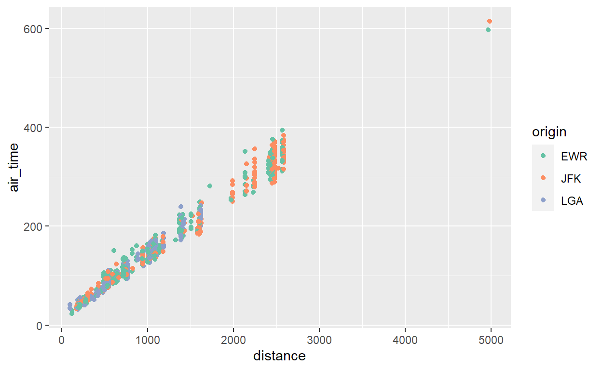
Vamos adicionar uma escala personalizada agora, usando cores de Color Brewer:
flights %>% sample_n(1000) %>% ggplot() +
geom_point(aes(x = distance, y = air_time, color=dep_time)) +
scale_color_gradient(low="#f7fcfd", high="#238b45")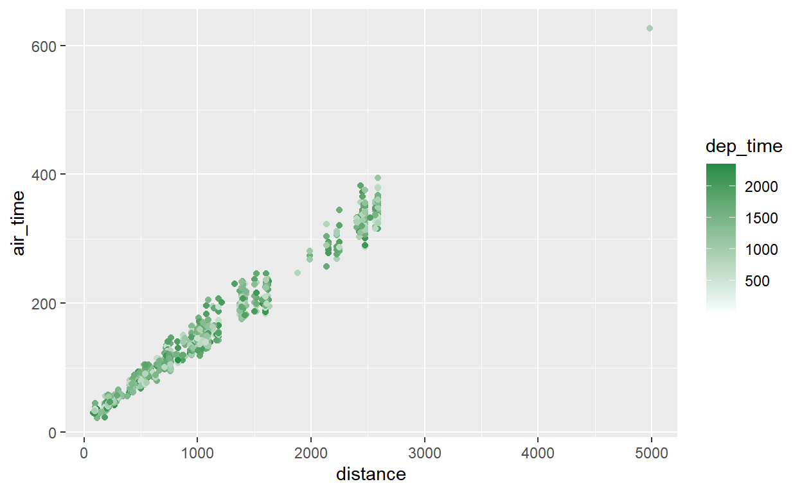
Entre os dois cores extremos, o R preenche uma escala contínua automaticamente. Com variáveis discretas, é mais difícil porque temos que especificar um cor distinto para cada categoria possível. Uma alternativa é aproveitar de uma paleta pre-definida por especialistas. Por exemplo, para definir cores dos pontos para cada aeroporto podemos usar a paleta ‘Set2’ (encontrada na opção ‘qualitative’ de Color Brewer):
flights %>% sample_n(1000) %>% ggplot() +
geom_point(aes(x = distance, y = air_time, color=origin)) +
scale_color_brewer(palette="Set2")A mesma lógica aplica para mudar os cores usadas para o argumento fill, por exemplo com uma variável contínua:
flights %>% group_by(origin, month) %>%
summarize(dep_delay_media=mean(dep_delay,na.rm=T)) %>%
ggplot() +
geom_tile(aes(x = origin, y = month, fill=dep_delay_media)) +
scale_fill_gradient(low="#f7fcfd", high="#238b45")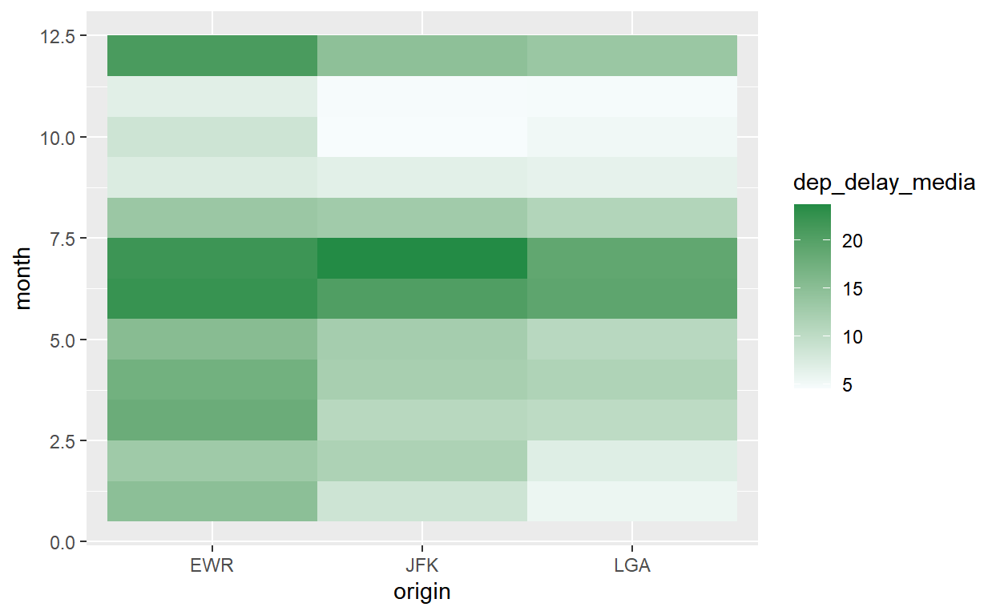
Finalmente, vamos construir um exemplo com uma varíavel discreta (a companhia dominante em cada mês e aeroporto de origem) e o preenchimento da área.
flights %>% group_by(origin, month, carrier) %>%
tally() %>%
group_by(origin, month) %>%
filter(n==max(n)) %>%
ggplot() +
geom_tile(aes(x = origin, y = month, fill=carrier)) +
scale_fill_brewer(palette="Set2")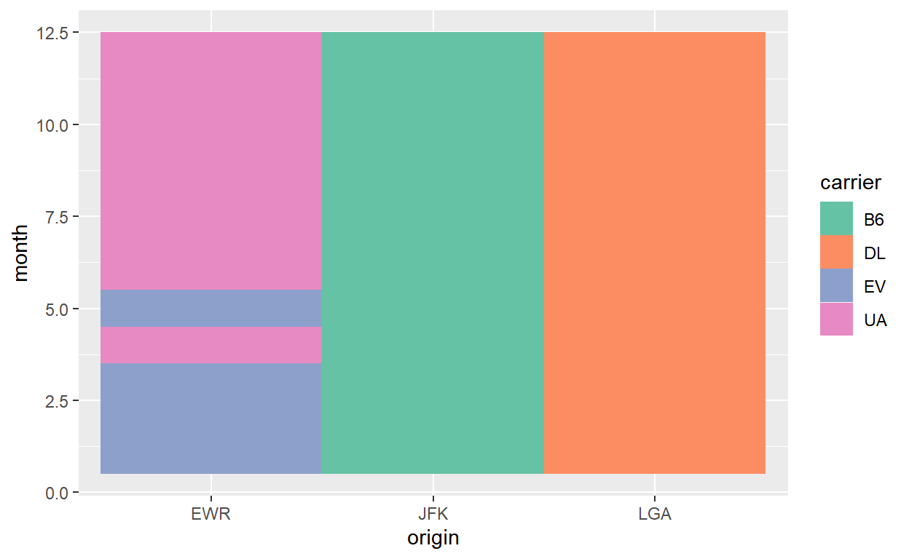
Personalização de Gráficos além de geometria
Finalmente, podemos alterar diversos aspectos não relacionados aos dados, geometria ou estéticas. O procedimento para adicionar alterações em título, eixos, legenda, etc, é o mesmo que para adicionar novas geometrias/camadas.
Em primeiro lugar, vamos adicionar um título ao gráfico:
flights %>% sample_n(1000) %>% ggplot() +
geom_point(aes(x = distance, y = air_time, color=origin)) +
ggtitle("Relação entre distância e duração de voo, por aeroporto do Nova Iorque")A seguir, vamos modificar os nomes dos rótulos dos eixos, com xlab() e ylab():
flights %>% sample_n(1000) %>% ggplot() +
geom_point(aes(x = distance, y = air_time, color=origin)) +
ggtitle("Relação entre distância e duração de voo, por aeroporto do Nova Iorque") +
xlab("Distância") +
ylab("Duração")O posicionamento da legenda pode ser modificado:
flights %>% sample_n(1000) %>% ggplot() +
geom_point(aes(x = distance, y = air_time, color=origin)) +
ggtitle("Relação entre distância e duração de voo, por aeroporto do Nova Iorque") +
xlab("Distância") +
ylab("Duração") +
theme(legend.position="bottom")Literalmente todos os elementos podem ser modificados, por exemplo o tamanho do texto nos eixos:
flights %>% sample_n(1000) %>% ggplot() +
geom_point(aes(x = distance, y = air_time, color=origin)) +
ggtitle("Relação entre distância e duração de voo, por aeroporto do Nova Iorque") +
xlab("Distância") +
ylab("Duração") +
theme(axis.text.x = element_text(size=4),
axis.text.y = element_text(size=4),
axis.title.x = element_text(size=4),
axis.title.y = element_text(size=4))O ggplot nos permite modificar basicamente todos os elementos de estilo do nosso gráfico, mas isso é muitos detalhes. Para alterar o estilo do nosso gráfico, é mais fácil usar um tema ( theme ) pré-definido. Por exemplo, podemos usar theme_classic para tirar o preenchimento e a grade do fundo.
flights %>% sample_n(1000) %>% ggplot() +
geom_point(aes(x = distance, y = air_time, color=origin)) +
ggtitle("Relação entre distância e duração de voo, por aeroporto do Nova Iorque") +
xlab("Distância") +
ylab("Duração") +
theme_classic()Os temas também podem ser usados para replicar estilos de outras fontes profissionais, por exemplo usando o pacote ggthemes. Debaixo criamos um gráfico usando o estilo da revista “The Economist” em uma linha só de código.
# install.packages("ggthemes")
library(ggthemes)
flights %>% sample_n(1000) %>% ggplot() +
geom_point(aes(x = distance, y = air_time, color=origin)) +
ggtitle("Relação entre distância e duração de voo, por aeroporto do Nova Iorque") +
xlab("Distância") +
ylab("Duração") +
theme_economist()Habilidade Básica de Programação: Salvando Gráficos
O fluxo de trabalho normal é que o nosso gráfico aparece no relatório final. Não precisamos salvar o nosso gráfico separadamente. Mas em caso que você queria salvar o seu gráfico como um arquivo de imagem, pode usar ggsave() que salva o último gráfico apresentado em R. O tipo de imagem é definado com a extensão do arquivo (.png, .jpg, .pdf etc.).
flights %>% ggplot() +
geom_bar(aes(x=origin))
ggsave("flights_barplot.png")O arquivo ‘flights_barplot.png’ será salvo na pasta do seu projeto.
Gráficos interativas e animações
Se você estiver trabalhando com um site online (e não um PDF), talvez queira tornar seu gráfico interativo para que os usuários possam explorar cada ponto de dados. Isso é fácil com o pacote plotly e o comando ggplotly. Gravamos nosso gráfico no mesmo sintaxe de ggplot como um objeto e, em seguida, usamos ggplotly.
#install.packages("plotly")
library(plotly)
graf_1 <- flights %>% sample_n(1000) %>% ggplot() +
geom_point(aes(x = distance, y = air_time, color=origin)) +
ggtitle("Relação entre distância e duração de cada voo, por aeroporto do Nova Iorque em 2013") +
xlab("Distância") +
ylab("Duração") +
theme_classic()
graf_1 %>%
ggplotly()Este pacote também ajuda a transformar gráficos em animações. Podemos usar o mesmo fluxo de trabalho acima, e só precisamos especificar o parâmetro ‘frame’ em ggplot para que a variável que queremos a mudar com cada slide da animação. Para ilustrar, vamos analisar o mesmo gráfico com uma animação por mês. Toque ‘play’ no gráfico produzido pelo código debaixo para ver a animação. Isto apenas funciona em relatórios de HTML.
graf_2 <- flights %>% sample_n(1000) %>% ggplot() +
geom_point(aes(x = distance, y = air_time, color=origin, frame=month)) +
ggtitle("Relação entre distância e duração de cada voo, por aeroporto do Nova Iorque em 2013") +
xlab("Distância") +
ylab("Duração") +
theme_classic()
graf_2 %>%
ggplotly()Existem infinitas personalizações possíveis. Ninguém pode lembrar todas os detalhes ou o código. É frequentemente necessário buscar online para ajuda ou ideais, mas buscando para ‘gráfico bonito’ não ajuda nada. Temos que usar a linguagem e a gramática de gráficos para encontrar o que estamos procurando, então é crucial entender o que significa uma geometria, uma estética, uma escala, etc.
Em caso de dúvida, pode consultar o cheatsheet aqui. Um outro ponto de referência é a lista de tipo de gráficos com exemplos aqui.
Exercício 3: Gráficos Avançados
- Começando com o mesmo gráfico de Exercício 2 Q3, prepare o gráfico de pontos mostrando a relação entre o atraso na partida (
dep_delay) e o atraso na chegada (arr_delay) para os voos de JFK a MIA (Miama). Colora os pontos de acordo com a companhia aérea, e adicione títulos bem formatos nos eixos e para o gráfico inteiro.
flights %>% filter(origin=="JFK" & dest=="MIA") %>%
ggplot() +
geom_point(aes(x=dep_delay, y=arr_delay, colour=carrier))- Ajuste o seu gráfico de questão 1 para que o cor do ponto reflete uma variável contínua, a hora de partida (
dep_time), usando uma escala de cores apropriada.
flights %>% filter(origin=="JFK" & dest=="MIA") %>%
ggplot() +
geom_point(aes(x=dep_delay, y=arr_delay, colour=dep_time)) +
scale_colour_gradient(low="#efedf5", high="#4a1486")- Prepare um gráfico de linhas mostrando a distância de viagem de todos os voos por mês, com uma linha para cada aeroporto de origem. Aplique uma escala de cores apropriada.
flights %>% mutate(month=factor(month, 1:12, ordered=TRUE)) %>%
group_by(month, origin) %>%
summarize(distancia_total=sum(distance, na.rm=T)) %>%
ggplot() +
geom_line(aes(x=month, y=distancia_total, group=origin, colour=origin)) +
scale_colour_brewer(palette="Set2")- Prepare vários gráficos numa grade, cada um mostrando a relação entre a hora de partida (
hour) e o atraso média de partida em um aeroporto de origem para uma companhia aérea.
flights %>% group_by(hour, origin, carrier) %>%
summarize(dep_delay_media=mean(dep_delay,na.rm=T)) %>%
ggplot() +
geom_line(aes(x=hour, y=dep_delay_media)) +
facet_grid(rows=vars(carrier), cols=vars(origin))Leitura para Tutorial 7
Antes da próxima aula, por favor leia R 4 Data Science, Capítulo 13